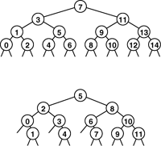
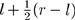
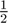

Keeping the table sorted as we do in insertion sort leads to a running time that is a quadratic function of the number of insert operations, but this cost might be tolerable or even negligible if the number of search operations is huge. In the typical situation where all the items (or even a large number of them) are available before the search begins, we might construct the symbol table by having a constructor that takes an array as its argument and uses one of the standard sorting methods from Chapters 6 through 10 to sort the table during initialization. After doing so, we could handle updates to the table in various ways. For example, we could maintain order during insert, as in Program 12.5 (see also Exercise 12.21), or we could batch them, sort, and merge (as discussed in Exercise 8.1). Any update could involve an item with a smaller key than those of any item in the table, so every item in the table might have to be moved to make room. This potential for a high cost of updating the table is the biggest liability of using binary search. On the other hand, there are a great many applications where a static table can be presorted and the fast access provided by implementations like Program 12.7 makes binary search the method of choice. Program 12.7. Binary search (for array-based symbol table)
If we need to insert new items dynamically, it seems that we need a linked structure, but a singly linked list does not lead to an efficient implementation, because the efficiency of binary search depends on our ability to get to the middle of any subarray quickly via indexing, and the only way to get to the middle of a singly linked list is to follow links. To combine the efficiency of binary search with the flexibility of linked structures, we need more complicated data structures, which we shall begin examining shortly. If duplicate keys are present in the table, then we can extend binary search to support symbol-table operations for counting the number of items with a given key or returning them as a group. Multiple items with keys equal to the search key in the table form a contiguous block in the table (because it is in order), and a successful search in Program 12.7 will end somewhere within this block. If an application requires access to all such items, we can add code to scan both directions from the point where the search terminated, and to return two indices delimiting the items with keys equal to the search key. In this case, the running time for the search will be proportional to lg N plus the number of items found. A similar approach solves the more general range-search problem of finding all items with keys falling within a specified interval. We shall consider such extensions to the basic set of symbol-table operations in Part 6. The sequence of comparisons made by the binary search algorithm is predetermined: The specific sequence used depends on the value of the search key and on the value of N. The comparison structure can be described by a binary-tree structure such as the one illustrated in Figure 12.3. This tree is similar to the tree that we used in Chapter 8 to describe the subfile sizes for mergesort (Figure 8.3). For binary search, we take one path through the tree; for mergesort, we take all paths through the tree. This tree is static and implicit; in Section 12.5, we shall see algorithms that use a dynamic, explicitly constructed binary-tree structure to guide the search. Figure 12.3. Comparison sequence in binary searchThese divide-and-conquer tree diagrams depict the index sequence for the comparisons in binary search. The patterns are dependent on only the initial file size, rather than on the values of the keys in the file. They differ slightly from the trees corresponding to mergesort and similar algorithms (Figures 5.6 and 8.3) because the element at the root is not included in the subtrees. The top diagram shows how a file of 15 elements, indexed from 0 to 14, is searched. We look at the middle element (index 7), then (recursively) consider the left subtree if the element sought is less, and the right subtree if the element sought is greater. Each search corresponds to a path from top to bottom in the tree; for example, a search for an element that falls between the elements 10 and 11 would involve the sequence 7, 11, 9, 10. For file sizes that are not 1 less than a power of 2, the pattern is not quite as regular, as indicated by the bottom diagram, for 12 elements  One improvement that is possible for binary search is to guess where the search key falls within the current interval of interest with more precision (rather than blindly testing it against the middle element at each step). This tactic mimics the way we look up a name in the telephone directory or a word in a dictionary: If the entry that we are seeking begins with a letter near the beginning of the alphabet, we look near the beginning of the book, but if it begins with a letter near the end of the alphabet, we look near the end of the book. To implement this method, called interpolation search, we modify Program 12.7 as follows: We replace the statement m = (l+r)/2; with m = l+(v-a[l].key())*(r-l)/(a[r].key()-a[l].key()); To justify this change, we note that (l + r)/2 is shorthand for : We compute the middle of the interval by adding one-half of the size of the interval to the left endpoint. Using interpolation search amounts to replacing  in this formula by an estimate of where the key might be—specifically (v - kl)/(kr - kl), where kl and kr denote the values of a[l].key() and a[r].key(), respectively. This calculation is based on the assumption that the key values are numerical and evenly distributed. For files of random keys, it is possible to show that interpolation search uses fewer than lglg N+1 comparisons for a search (hit or miss). That proof is quite beyond the scope of this book. This function grows very slowly, and can be thought of as a constant for practical purposes: If N is 1 billion, lglg N < 5. Thus, we can find any item using only a few accesses (on the average)—a substantial improvement over binary search. For keys that are more regularly distributed than random, the performance of interpolation search is even better. Indeed, the limiting case is the key-indexed search method of Section 12.2. Interpolation search, however, does depend heavily on the assumption that the keys are well distributed over the interval—it can be badly fooled by poorly distributed keys, which do commonly arise in practice. Also, it requires extra computation. For small N, the lg N cost of straight binary search is close enough to lg lg N that the cost of interpolating is not likely to be worthwhile. On the other hand, interpolation search certainly should be considered for large files, for applications where comparisons are particularly expensive, and for external methods where high access costs are involved. Exercises
|


 lg
lg + 1
+ 1